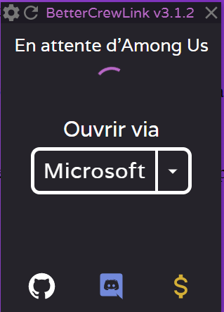
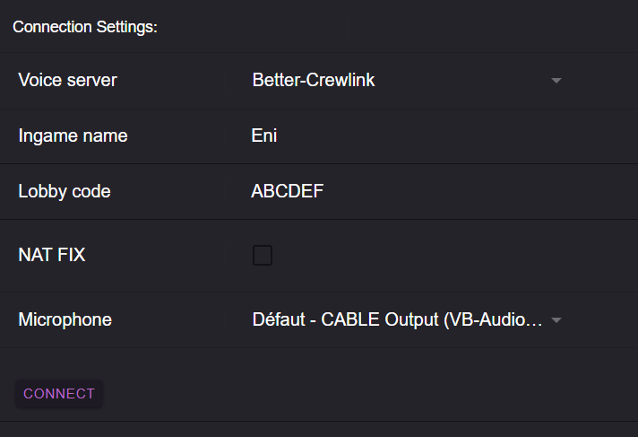

Oh, une soirée Among Us, mais avec un chat de proximité, comment faire?
Peu importe la plateforme où vous jouez, pas de panique, tout est pris en charge avec crewlink
Il vous suffit de télécharger crewlink sur ce lien, l'executer, et lancer le jeu avec votre plateforme où vous possédez le jeu. Rejoignez la session, et vous êtes fin prêts !
Ici par exemple, je lance en ayant le jeu à partir du xbox gamepass.
Lancez le jeu sur votre plateforme, ensuite rejoignez la session, puis vous fournissez vos informations de jeu dans ce site y compris votre pseudo et la session que t'as rejoint.
